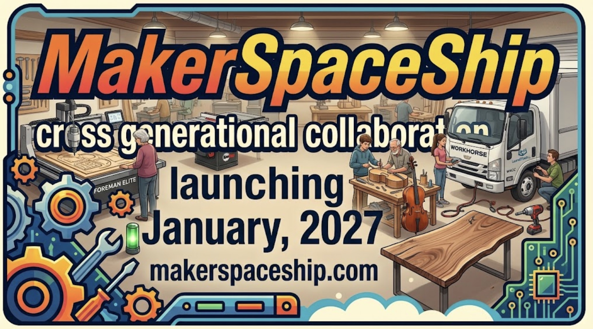

Welcome to the SE Corner of Laurel & 3rd St.
Our woodworking, pottery, and digital art studios are not mere tool rental facilities. We are an ecosystem of cross-generational mentorship. Our mission is to connect disengaged youth with adults whose contagious love of learning will inspire as we all share our skills. This collaboration is special among the retirees of our coastal community.

By operating a shared, professional-grade workspace, we provide the environment for organic mentorship to thrive. Whether you are slicing a 3D print, printing a shirt, creating a music video, or upfitting a utility truck, this space is designed so that every member acts as both a student and a teacher.
Guided Tours: During our regular hours of operation from 9:00 AM to 7:00 PM, Monday through Saturday, anyone can drop in for a guided tour of the facility.
The "Each One, Teach One" Collaboration Board
At the heart of our clean maker studio is our massive magnetic collaboration board. This dynamic visual hub ensures no one creates in a vacuum:
- Skill Profiles: Members check the tools they are proficient in and the skills they can mentor others on.
- Project Needs: Need help? Post a request. Example: "Need advice on complex wood joinery cut."
- Name Tags: Contain a "merit badge" for each tool of demonstrated safe proficiency.
Two Distinct Work Zones
To maximize safety and productivity, our facility is compartmentalized:
- Building 307 (The Shop): Located in the west-side garage bays, this area houses the loud, dusty, industrial equipment: woodworking, CNC machines, kiln, and our automotive upfitting bay, along with dust collection and ventilation. Tools are for adults only.
- Building 309 (The Studio): Occupying the quieter, climate-controlled retail storefront facing east, this side houses 3D printing, robotics, the soundproof music recording booth, micro-electronics, fabric/embroidery stations, and the pottery wheel. Anyone over age 13 is welcome.
See the complete list of tools.